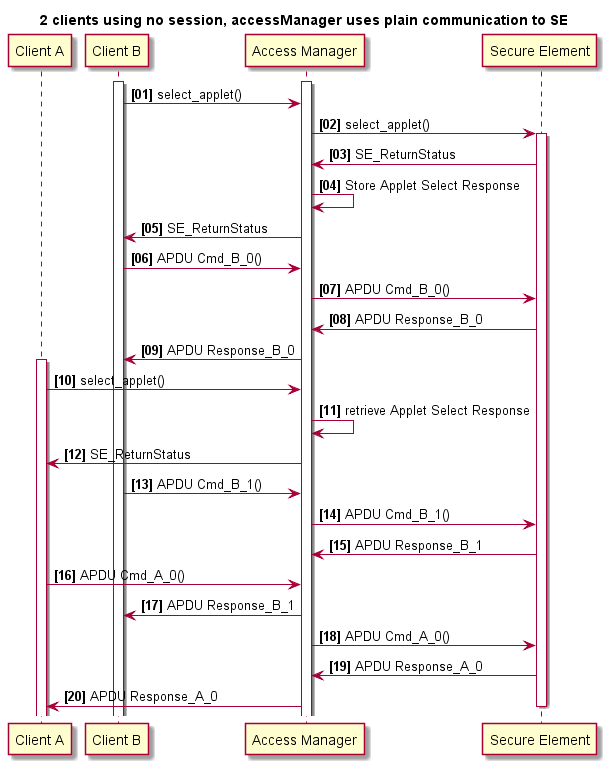

5.4.3. Access Manager: Manage access from multiple (Linux) processes to an SE05x IoT Applet¶
DocRevision : 0.93
Date : 2020-10-20
5.4.3.1. Summary¶
The Access Manager supports concurrent access from multiple linux processes to an SE05x IoT applet. The Access Manager can establish a connection to the SE05x either as a plain connection or as an SCP03 platform connection. Client processes connect over the JRCPv1 protocol to the accessManager. Refer to Concepts & Features for more details.
5.4.3.2. Usage¶
The accessManager takes two optional arguments 'plain' & 'any'
'accessManager':
Platform SCP03: ON.
Incoming connection: localhost.
'accessManager plain':
Platform SCP03: OFF.
Incoming connection: localhost.
'accessManager any':
Platform SCP03: ON.
Incoming connection: any supported address.
'accessManager plain any':
Platform SCP03: OFF.
Incoming connection: any supported address.
Note:
Product Deployment => Enable Platform SCP03 & restrict incoming connection to localhost
In case STREAM sockets are used (currently the only socket type supported) client processes must connect to port 8040.
As an example:
The Access Manager is running on iMX and opens a listening STREAMING socket. Incoming connections can be restricted to client processes connecting over localhost.
Example invocation. Notice that the Platform SCP03 keys are passed through an environment variable:
root@imx8mqevk:~/mnt/git/simw-top_build_imx8_5_4_24/imx_native_se050_t1oi2c# \ EX_SSS_BOOT_SCP03_PATH=/home/root/plain_scp03.txt bin/accessManager Starting accessManager (Rev.0.9). Protect Link between accessManager and SE: YES. accessManager JRCPv1 (T1oI2C SE side) ****************************************************************************** Server: waiting for connections on port 8040. Server: only localhost based processes can connect.
client process connects via JRCPv1 to 127.0.0.1:8040
Example invocation. Notice that the server address is set through an environment variable. In a product deployment the default server:port address can also be hard-coded to the proper value:
root@imx8mqevk:~/home/root# EX_SSS_BOOT_SSS_PORT=127.0.0.1:8040 se05x_ConcurrentEcc
5.4.3.3. Build¶
The Access Manager must be built as a statically linked executable as its communication and authentication layer is different from the client processes that connect to it.
Build settings to support access to SE05x on iMX host platform (to be applied on top of a configured host build area):
cmake -DSCP:STRING=SCP03_SSS -DSE05X_Auth:STRING=PlatfSCP03 -DSMCOM:STRING=T1oI2C \ -DWithSharedLIB:BOOL=OFF -DPAHO_BUILD_SHARED:BOOL=FALSE -DPAHO_BUILD_STATIC:BOOL=TRUE . cmake --build . --target accessManager
The client processes that connect to the Access Manager must be built in a separate build environment. All session authentication mechanisms are supported, platform SCP03 must be off (platform SCP03 is handled by the Access Manager).
Build settings for client processes connecting via Access Manager, in the example no session authentication is used (to be applied on top of a configured host build area):
cmake -DSE05X_Auth:STRING=None -DSMCOM:STRING=JRCP_V1 . cmake --build .
5.4.3.4. Demo: concurrent access from 2 processes using OpenSSL engine¶
The example requires an embedded Linux platform (e.g. an iMX8) with an attached SE05X. Interaction with the iMX8 is over 3 different shells. These shells can e.g. be established via ssh from a PC on the same network.
Build the Access Manager in a dedicated workarea, follow build instructions as above. Select static linking, enable Platform SCP03 and use T1oI2C as communication protocol.
Build the Plug&Trust package in a dedicated workarea, follow build instructions as above. Select None as authentication mode and use JRCPv1 as communication protocol.
Start the Access Manager from a dedicated shell (to simplify the demo, Platform SCP03 is not enabled):
./accessManager plain
Open another shell and configure the attached Secure Element once using the ssscli tool (ensure the installed ssscli tool uses JCRPv1 as communication protocol, refer to Communication interface (cmake SMCOM setting)):
cd <plug_and_trust>/simw-top/sss/plugin/openssl/scripts python3 openssl_provisionEC.py --key_type prime256v1 --connection_data 127.0.0.1:8040
From the same shell invoke the OpenSSL Engine to perform various sign/verify operations using the provisioned EC key pairs:
python3 openssl_EccSign.py --key_type prime256v1 --connection_data 127.0.0.1:8040
Open another shell and invoke the OpenSSL Engine to perform various sign/verify operations using the provisioned EC key pairs:
cd <plug_and_trust>/simw-top/sss/plugin/openssl/scripts python3 openssl_EccSign.py --key_type prime256v1 --connection_data 127.0.0.1:8040 --output_dirname output3
The respective ‘openssl_EccSign.py’ invocations can be repeated, ensure both process invocations run in parallel.
5.4.3.5. Example programs prepared for concurrent access¶
The demo folder of the Plug&Trust MW package contains two SSS API based example programs that are compatible with concurrent access requirements like:
ability to select a specific (optional) authentication object ID
provisioned content of secure element is not erased at project start-up
For more details on these examples refer to:
5.4.3.6. Concepts & Features¶
The Access Manager uses plain communication or platform SCP03 in the communication with the SE. Select the mode at start-up.
Client processes connect to the accessManager using the JRCPv1 protocol
The user session authentication type is determined at the client build time. User session authentication is transparent to the Access Manager.
The Access Manager ensures APDU command / response pairs associated with a client process are executed without interference from another client process.
The Access Manager does not connect to the SE05x at start up. It waits until a client process initiates a connection.
When a client process selects the SE05x IoT applet the applet response is cached by the Access Manager, a subsequent SE05x IoT applet select by a client process will simply return the cached applet response.
A card manager select command is intercepted by the Access Manager and a pre-cooked response is provided to the initiating client process. No interaction with the secure element takes place.
The following figure illustrates the Access Manager is an independent process on the Embedded System providing indirect access to the Secure Element for client processes.

The following sequence diagram illustrates two processes connecting through the Access Manager to the Secure Element.
5.4.3.7. Restrictions¶
Each user session needs to have a different authentication object; i.e. one Authentication Object cannot be used to open multiple sessions in parallel. This limitation is inherent to the SE05x user session concept.
The SE05x does not support more than two active user sessions (based upon either a User ID, AES Key or EC Key authentication object). The Access Manager does not and - conceptually - cannot monitor the number of active user sessions.
The Access Manager only supports concurrent access to the SE05x IoT applet. Do not access other applets than the SE05x applet through the Access Manager.
The Access Manager does not attempt to re-establish a broken connection to the SE05x. To recognize and recover from a broken connection, a system integrator must monitor failure to communicate to the Secure Element by the client processes. As and if required the Access Manager must be restarted and the affected client processes must reconnect to the Access Manager.
A client process establishing a user session with the SE05x applet must always close the user session prior to disconnecting from the Access Manager.
Selecting another applet than the SE05x IoT applet is possible but strongly discouraged and not supported.
The Access Manager does not :
Handle power management
Keep track of Secure Element resources
In a typical deployment the Access Manager and client processes are controlled by another – product specific - entity on the Embedded System:
In case of an applet update, the Access Manager must be shut down and control of the secure element must be handed over to the SEMS Lite update manager.
A credential update must be coordinated between the consuming processes and the updating process. Such coordination is out-of-scope of the Access Manager
Transparent usage of the OpenSSL Engine from different applications implies either no user session (Auth=None) or using the OpenSSL Engine from isolated environments (with different authentication settings). This restriction does not apply to applications built directly on top of the SSS API.
The SSS layer’s implementation of multistep symmetric ciphers does not allow concurrent execution of ciphers with the same cipher mode (e.g. twice kAlgorithm_SSS_AES_CBC).